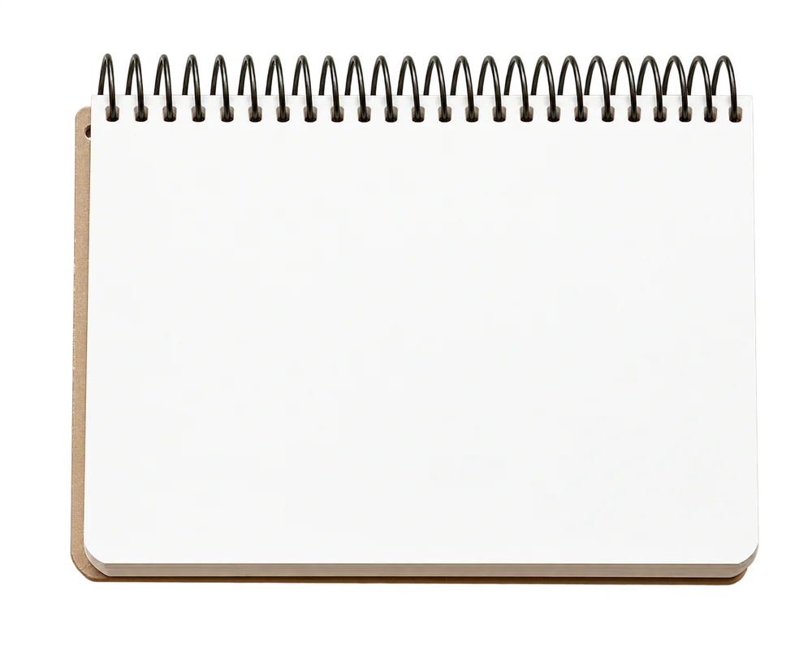

Five aircraft, quietly for sale.
- Mr. K — 4,000nm+, 8 seats
- cabin:
burlno burl wood! - pre-buy at Savannah? LOI Fri!
- site: specs in every folder ✓
Specifications supplied by the seller and subject to verification at pre-buy inspection.


One owner since new, Part 91 only, hangared in Teterboro. Fresh 72-month inspection and a cabin that has never seen a charter passenger.
View the aircraft

Accepted offer; pre-buy underway in Savannah. Ask to be told first if it returns to market.
Notify me

Low time, a single corporate owner, Ka-band and a head-up display. Hangared since delivery.
View the aircraft

Single pilot, two owners, every logbook since new. The sensible choice that never feels like one.
View the aircraft

Mountain-based and meticulously kept. Recent paint, a refreshed cabin and an aft divan that sleeps two.
View the aircraftEvery aircraft flown and logged before it is offered · pre-buy at the factory service center · letters of intent are non-binding.